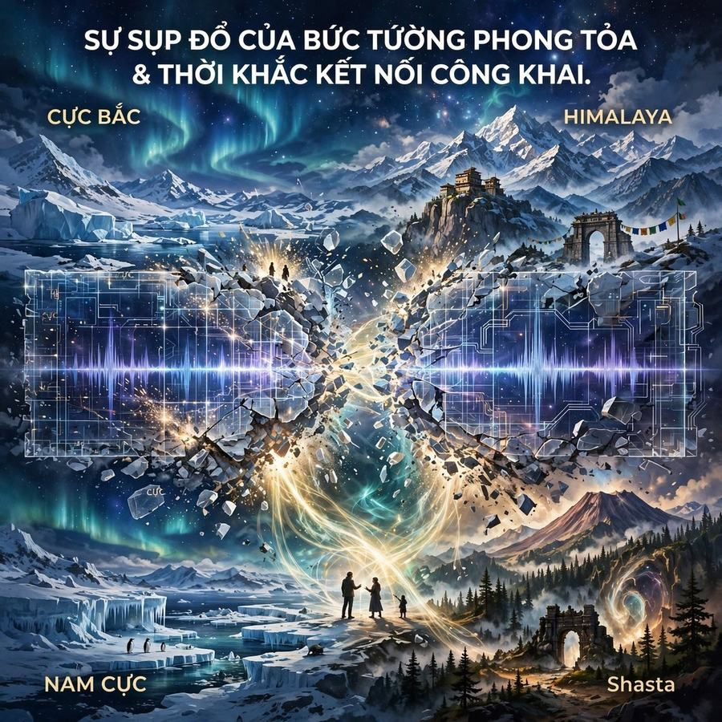
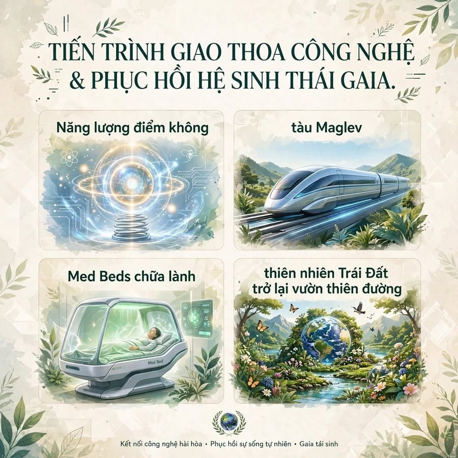
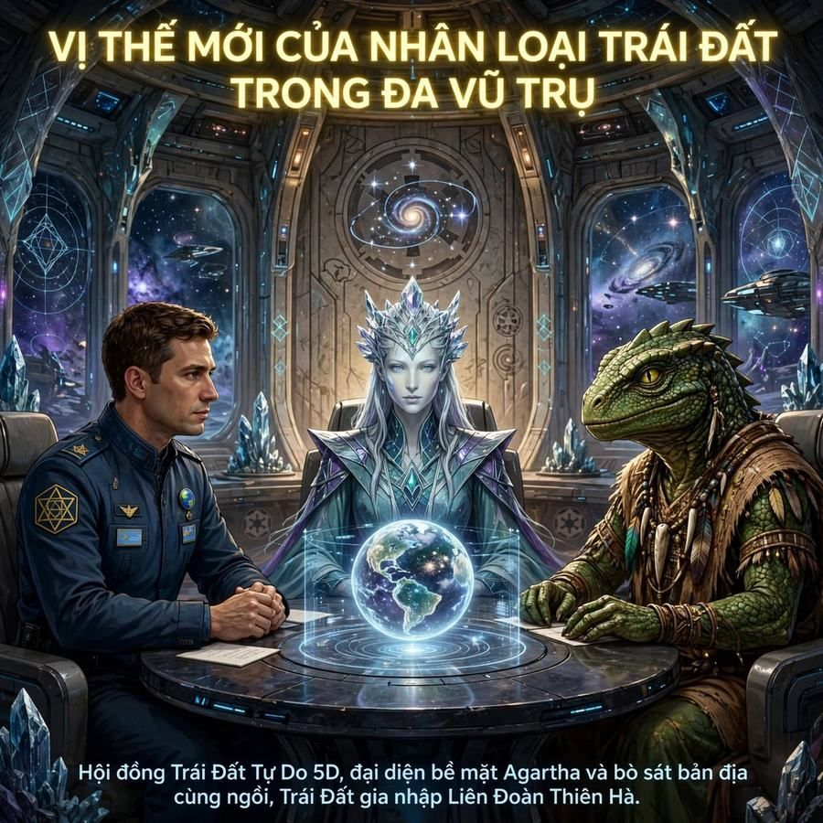
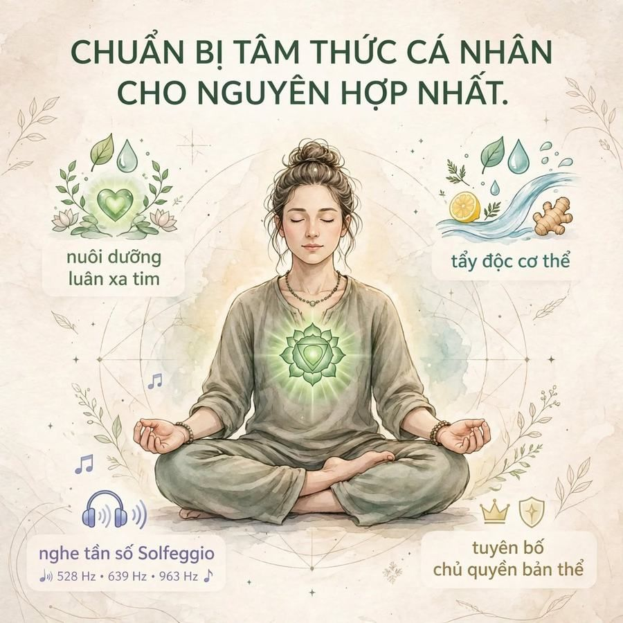
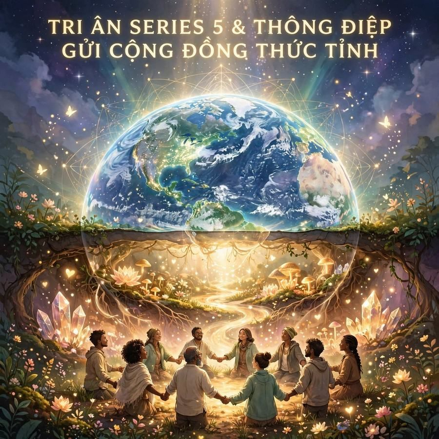

Trang chủ / Chuyên đề 4: Văn Minh Lòng Đất / Kỳ 40
Chuyên đề 4 · Kỳ 40 / 90
KỶ NGUYÊN HỢP NHẤT TRÁI ĐẤT — CON NGƯỜI BỀ MẶT & VĂN MINH AGARTHA BƯỚC VÀO 5D

Hành trình 10 kỳ của chuyên đề 4: Bí Ẩn Văn Minh Lòng Đất (Agartha) & Chủ Nhân Bản Địa Trái Đất đã chính thức bước vào thời khắc khép lại rực rỡ nhất!
Qua 9 kỳ vừa qua, chúng ta đã cùng nhau du hành qua từng tầng sâu của hành tinh Gaia: Khám phá cấu trúc Trái Đất Rỗng và nguồn sáng Mặt Trời Nội Thể, giải mã hành trình 10 triệu năm tiến hóa của chủng tộc Bò sát bản địa, nhìn lại lịch sử các cuộc chiến tranh vũ trụ cổ đại, vạch trần ma trận ngầm DUMBs, ghé thăm thành phố tinh thể Telos dưới núi Shasta, chiêm bái Vương quốc Shambhala dưới dãy Himalaya, thâm nhập Hồ nước ấm Vostok dưới băng Nam Cực, chứng kiến chiến dịch quét sạch căn cứ Dulce, và đứng trước Cửa Ngõ Cực Bắc để cảm nhận làn sóng thức tỉnh toàn cầu.
Và giờ đây, khi Ma trận 3D phong tỏa dần tan biến và dải tần số 5D thẩm thấu toàn bộ Hệ Mặt Trời, một thời khắc lịch sử mang tầm vóc Đa Vũ trụ đang mở ra: Sự Hợp Nhất Vĩ Đại giữa Con Người Bề Mặt và Mạng Lưới Văn Minh Agartha!
Bức tường rào chắn tần số chia rẽ hai thế giới suốt hàng chục ngàn năm qua sẽ sụp đổ ra sao? Tiến trình giao thoa tri thức, công nghệ Năng lượng Điểm Không và y học tinh thể sẽ phục hồi hệ sinh thái Trái Đất thế nào? Vị thế chủ quyền của nhân loại được khẳng định ra sao khi bề mặt và lòng đất hợp làm một? Và mỗi chúng ta cần chuẩn bị tâm thức thế nào để sẵn sàng bước vào Kỷ nguyên 5D?
Hãy cùng dấn thân vào Kỳ 10 (Kỳ Cuối): Kỷ Nguyên Hợp Nhất Trái Đất — Con Người Bề Mặt & Văn Minh Agartha Bước Vào 5D để chiêm ngưỡng bức tranh hoàn lương vĩ đại nhất của Quê hương Gaia!
✦ ✦ ✦1. SỰ SỤP ĐỔ CỦA BỨC TƯỜNG PHONG TỎA & THỜI KHẮC KẾT NỐI CÔNG KHAI
Trong hàng ngàn năm qua, nhân loại bề mặt và cư dân lòng đất bị chia rẽ bởi ma trận phong tỏa tần số 3D và sự thao túng của các lực lượng kiểm soát bóng tối. Nhưng thời khắc giải phóng đã điểm!
A. Xóa Bỏ Rào Chắn Tần Số Giữ Hai Thế Giới
- Tan Biến Màng Ngụy Trang: Khi các chùm sóng Gamma từ Trung tâm Ngân Hà dội xuống, dải tần số từ trường của Trái Đất được nâng cao. Lớp màng nhiễu loạn làm mờ mắt con người bề mặt sẽ tự động tan biến, giúp các cửa ngõ dẫn vào lòng đất tại Núi Shasta, Himalaya, Nam Cực và Cực Bắc hiện diện rõ ràng.
- Chấm Dứt Sự Cô Lập Lịch Sử: Cư dân Agartha và con người bề mặt không còn phải sống trong sự giấu giếm hay nghi ngờ. Hai thế giới sẽ khép lại Kỷ nguyên chia rẽ để chính thức nhận lại nhau như những người anh em chung một hành tinh mẹ Gaia!
B. Tiến Trình Giải Mật Toàn Diện (Full Disclosure)
- Công Khai Tri Thức Cổ Đại: Sự hợp nhất sẽ đi kèm với sự bùng nổ thông tin giải mật: Lịch sử khởi nguyên thật sự của Trái Đất, nguồn gốc bộ gen 22 chủng tộc thiên hà, và sự thật về các nền văn minh cổ đại (như Lemuria, Atlantis) sẽ được đưa vào giáo dục công cộng.

2. TIẾN TRÌNH GIAO THOA CÔNG NGHỆ & PHỤC HỒI HỆ SINH THÁI GAIA
Sự hợp nhất giữa văn minh Agartha và loài người bề mặt sẽ mang lại một bước nhảy vọt thần kỳ về khoa học, y học và môi trường sống.
A. Tiếp Nhận Công Nghệ Năng Lượng Điểm Không & Tinh Thể
- Chấm Dứt Kỷ Nguyên Nhiên Liệu Hóa Thạch: Cư dân Agartha sẽ chia sẻ công nghệ thu hoạch Năng lượng Điểm Không (Free Energy) và máy phát điện từ thạch anh, giúp xóa bỏ hoàn toàn việc khai thác dầu mỏ, than đá hay ô nhiễm môi trường trên bề mặt.
- Giao Thông Kháng Hấp Dẫn & Maglev: Hệ thống giao thông khói bụi 3D sẽ được thay thế bằng tàu đệm từ Maglev xuyên lục địa và các phương tiện di chuyển bằng từ trường tinh thể.
B. Chữa Lành Bệnh Tật Bằng Y Học Lượng Tử Med Beds
- Phục Hồi Thể Xác Tối Ưu: Sự kết hợp giữa công nghệ Giường Y Tế Lượng Tử (Med Beds) của Agartha và các dải tần số âm thanh tái lập trình DNA sẽ giúp xóa sổ mọi bệnh tật di truyền, đảo ngược lão hóa và mang lại tuổi thọ sinh học hàng ngàn năm cho con người Trái Đất.
- Tái Tạo Thiên Nhiên Nguyên Thuần: Nguồn nước, không khí và thổ dưỡng bề mặt sẽ được làm sạch bằng công nghệ vi sinh sinh học lượng tử, đưa Trái Đất trở lại trạng thái vườn thiên đường rực rỡ như thời kỳ khởi nguyên!

3. VỊ THẾ MỚI CỦA NHÂN LOẠI TRÁI ĐẤT TRONG ĐA VŨ TRỤ
Sự hợp nhất giữa cư dân bề mặt và lòng đất mở ra một chương mới cho vị thế địa chính trị thiên hà của hành tinh chúng ta.
A. Khai Sinh "Hội Đồng Trái Đất Tự Do 5D" (United Terran Council)
- Hợp Nhất Tất Cả Các Chủng Tộc Cư Trú: Đại diện con người bề mặt, cư dân Agartha (Telosii, Shambhala, Ramay) và chủng tộc Bò sát bản địa hòa bình sẽ cùng nhau ngồi lại thành lập Hội Đồng Trái Đất Tự Do.
- Đại Diện Duy Nhất Cho Gaia: Hội đồng này sẽ nắm giữ trọn vẹn Quyền Chủ Quyền Tối Cao (Planetary Sovereignty), tự quản lý hành tinh mà không chịu sự can thiệp hay thao túng từ bất kỳ lực lượng cai trị bên ngoài nào.
B. Đại Sứ Thư Viện Sinh Học Sống Gia Nhập Liên Đoàn Thiên Hà
- Bước Lên Ngai Vị Đại Sứ Vũ Trụ: Trái Đất officially trở thành thành viên bình đẳng của Liên Đoàn Thế Giới Thiên Hà (GFW) và Liên Minh Các Đấng Sáng Lập. Nhân loại Trái Đất — với bộ gen tích hợp đỉnh cao — sẽ đóng vai trò là những Đại sứ Hòa bình đi đến các hệ sao để chia sẻ bài học chuyển hóa nhận thức và tình yêu thương!

4. CHUẨN BỊ TÂM THỨC CÁ NHÂN CHO KỶ NGUYÊN HỢP NHẤT
Để trở thành một phần của thực tại 5D rực rỡ này, quá trình chuyển hóa phải bắt đầu ngay từ chính tâm trí và lối sống hàng ngày của bạn:
- Nuôi Dưỡng Tình Yêu Thương Từ Luân Xa Tim: Mở rộng lòng từ bi, buông bỏ sự phán xét, sự chia rẽ và hận thù. Tình yêu thương chính là "tấm vé tần số" duy nhất giúp bạn cộng hưởng hoàn hảo với dải mật độ 5D của Gaia và cư dân Agartha.
- Khai Mở Tuyến Tùng & Làm Sạch Cơ Thể: Tẩy độc thể xác bằng thực phẩm tươi sạch, nước tinh khiết, thiền định định tâm và lắng nghe các tần số âm thanh Solfeggio để giữ cho Tuyến Tùng luôn nhạy bén với dải xung thấu thị.
- Sống Với Nhận Thức Chủ Quyền Bản Thể: Luôn tự tin khẳng định: "Tôi là một sinh mệnh ánh sáng tự do, mang dòng máu thần thánh của Đa Vũ vũ trụ. Tôi làm chủ tâm trí, thể xác và tương lai của chính mình!"

5. TRI ÂN SERIES 4 & THÔNG ĐIỆP GỬI CỘNG ĐỒNG THỨC TỈNH
chuyên đề 4: Bí Ẩn Văn Minh Lòng Đất (Agartha) & Chủ Nhân Bản Địa Trái Đất chính thức khép lại, để lại một dấu ấn sâu sắc trong tâm trí mỗi chúng ta:
- Gaia Là Ngôi Nhà Thiêng Liêng Đa Chiều: Trái Đất không đơn côi; bên dưới chân bạn là một thế giới ngầm ngập tràn ánh sáng, tình yêu và tri thức đang chờ đón ngày hội ngộ!
